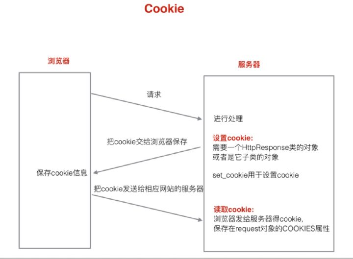
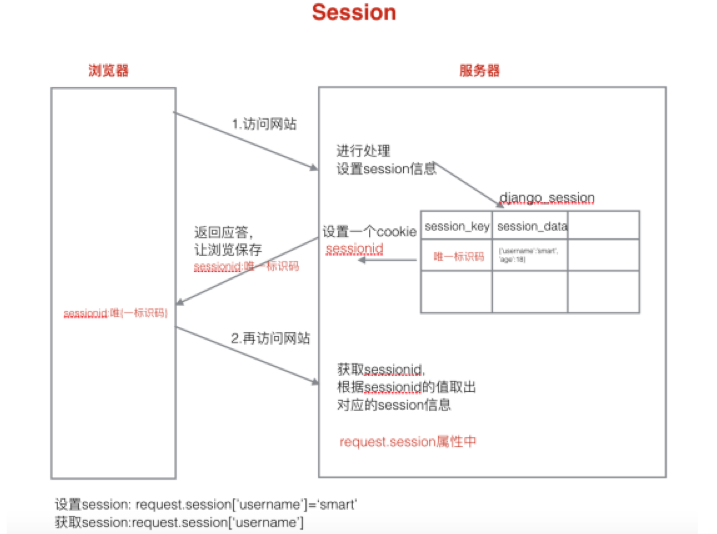

Django1.8.2中文文档：Django1.8.2中文文档
http协议是无状态的。下一次去访问一个页面时并不知道上一次对这个页面做了什么。
无状态的应用层面的原因是：浏览器和服务器之间的通信都遵守HTTP协议。
根本原因是：浏览器与服务器是使用Socket套接字进行通信的，服务器将请求结果返回给浏览器之后，会关闭当前的Socket连接，而且服务器也会在处理页面完毕之后销毁页面对象。
有时需要保存下来用户浏览的状态，比如用户是否登录过，浏览过哪些商品等。 实现状态保持主要有两种方式：

cookie是由服务器生成，存储在浏览器端的一小段文本信息。
cookie的特点：
cookie使用示例
设置cookie
def set_cookie(request):
"""设置cookie信息"""
response = HttpResponse("设置cookie")
# 设置一个cookie信息，名字为num，值为1
response.set_cookie('num', 1)
# 返回response
return response获取cookie
def get_cookie(request):
"""获取cookie信息"""
# 取出cookie num的值
num = request.COOKIES['num']
return HttpResponse(num)设置cookie过期时间
def set_cookie(request):
"""摄制cookie信息"""
response = HttpResponse("设置cookie")
# 设置一个cookie信息，名字为num，值为1，并且设置 cookie的过期时间为2周，两种方式
response.set_cookie('num', 1, max_age=14*24*3600)
# response.set_cookie('num', 1, expires=datetime.now()+timedelta(days=14))
return response设置多个cookie
def set_cookie(request):
"""摄制cookie信息"""
response = HttpResponse("设置cookie")
# 设置多个cookie
response.set_cookie('num', 1)
response.set_cookie('num2', 2)
return response
编写login.html
<!DOCTYPE html>
<html lang="en">
<head>
<meta charset="UTF-8">
<title>Login</title>
<meta name="viewport" content="width=device-width, initial-scale=1">
</head>
<body>
<form action="/login_check/" method="post">
<label for="username">用户:
<input type="text" id="username" name="username" value="{{ usernam }}">
</label>
<br />
<label for="password">密码:
<input type="password" id="password" name="password">
</label>
<br />
<input type="checkbox" name="remember">记住用户名
<br />
<input type="submit" value="登录">
</form>
</body>
</html>编写login_check函数
def login_check(request):
# 1.获取用户名和密码
username = request.POST.get("username")
password = request.POST.get("password")
remember = request.POST.get("remember")
print(username, password)
# 2.进行校验
# 3.返回应答
if username == "yifchan" and password == "yifchan":
response = redirect("/index")
# 判断是否需要记住用户名
if remember == 'on':
# 设置cookie username-过期时间为1周
response.set_cookie('username', username, max_age=7*24*3600)
return response
else:
return HttpResponse("账号或密码错误")编写login函数
def login(request):
"""登录处理函数"""
# 获取cookie username
if 'username' in request.COOKIES:
username = request.COOKIES['username']
else:
username = ''
return render(request, "booktest/login.html", {'usernam': username})设计路由
url(r'^login/$', views.login),
url(r'^login_check/$', views.login_check),

session存储在服务器端。
session的特点：
对象及方法
通过HttpRequest对象的session属性进行会话的读写操作。
1） 以键值对的格式写session。
request.session['键']=值2）根据键读取值。
request.session.get('键',默认值)3）清除所有session，在存储中删除值部分。
request.session.clear()4）清除session数据，在存储中删除session的整条数据。
request.session.flush()5）删除session中的指定键及值，在存储中只删除某个键及对应的值。
del request.session['键']6）设置会话的超时时间，如果没有指定过期时间则两个星期后过期。
request.session.set_expiry(value)
session使用示例
# 设置session
def set_session(request):
"""设置session"""
request.session['username'] = 'yifchan'
request.session['age'] = 18
request.session.set_expiry(10) # 设置session的有效时间为10s
return HttpResponse('设置session成功')
# 获取session
def get_session(request):
"""获取session"""
username = request.session['username']
age = request.session['age']
info = username + ":" + age
return HttpResponse(info)
# 清除session
def clear_session(request):
"""清除session信息"""
# request.session.clear() # 只会清除有用信息部分，但这整条信息不回被清除
request.session.flush() # 清除整条session信息
return HttpResponse("清除session成功")注意：所谓的session过期指的是浏览器端存储的cookie的sessionid过期了。
cookie:记住用户名。安全性要求不高。
session:涉及到安全性要求比较高的数据。例如银行卡账户,密码等。